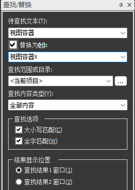
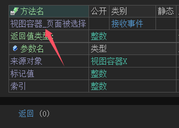
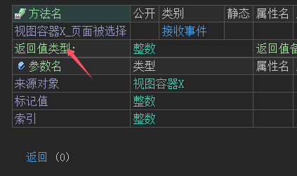
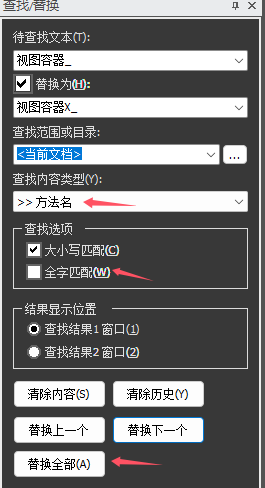

安卓X拥有更好的兼容性，推荐全面使用安卓X来开发安卓程序。
现有的火山安卓程序升级安卓X也是比较简单的，只有少数的库需要升级到安卓X，而且升级成本也是非常低的，几乎可以无缝对接。
比如软件程序中使用了“视图容器”只需要在程序中进行批量替换将“视图容器”替换为“视图容器X”即可。
注意：
(1) 准备升级之前首先将当前项目进行完整备份，防止替换出现错误。
(2) 查找范围提供“当前项目”
(3) 务必勾选“大小写匹配”和“全字匹配”防止替换错误。
如下图所示：

部分组件可能存在事件，需要单独处理，比如“视图容器”中存在“页面被选择”事件，初次替换后“来源对象”参数正常替换，但是事件名称不正常，这时候需要手动进行修改。

- 如下图所示手动增加X，即可完成视图容器的升级。

当然也可以利用查找替换，进行批量替换视图容器的事件，如下图所示。
但是这种方法需要你保证没有其它的方法名字起名为“视图容器_”，如果你没办法确定，建议在项目中搜索后，手动添加，以防止盲目替换发生错误。

到此基本的升级逻辑演示完毕，下面列出所有需要升级到安卓X的库和方法，未提及的类和方法不需要升级。
注：上图中演示的“视图容器”已经兼容安卓X系统（需升级最新版），无需迁移。
注1：个别库可能有使用差异，注意备注说明。
注2：批量替换时，建议先在整个项目中搜索一下，防止替换出错，因为可能会出现你没有用这个方法，但是自定义了一个同名的方法，盲目替换会导致出错，所以替换前先搜索确定一下。
注3：标红的需要单独处理。
原类名 新类名
原方法名
新方法名
备注
窗口相关
兼容窗口
高级兼容窗口
常用兼容窗口附加清单
常用高级兼容窗口附加清单
兼容工具栏
高级兼容工具栏
兼容窗口标题栏
高级兼容窗口标题栏
兼容工具栏_导航按钮被单击
高级兼容工具栏_导航按钮被单击
如果还添加了其它事件，请自行搜索替换即可。 兼容工具栏_菜单项被单击
高级兼容工具栏_菜单项被单击
兼容窗口标题栏菜单监听类
高级兼容窗口标题栏菜单监听类
兼容窗口标题栏菜单监听类_菜单可见性改变
高级兼容窗口标题栏菜单监听类_菜单可见性改变
需要额外注意的升级
全屏侧滑布局器
全屏侧滑布局器X
使用方式略有差异，看最新案例演示。
配置安卓X窗口组件模块
运行时权限工具类
权限工具类X
使用方式有差异，看“权限工具类X”案例演示。
QMUI升级
QMUI窗口
QMUI窗口X
QMUI基础类
QMUI基础类X
安卓QMUI窗口
安卓QMUI窗口X
下面的类，可以选择升级或者不升级，不升级也不会有任何影响。
高级弹窗容器
高级弹窗容器X
本类已经自动兼容安卓X系统，如果需要升级，注意事件变更。
注意“开始动画”和“结束动画”事件变更，注意注释。
高级图选择器
高级图选择器X
注1：“高级图选择器"已经自动兼容安卓X系统，可查看自带案例，申请权限后即可正常使用。
“高级图选择器X”为大版本升级，方法发生变更，如需使用注意看最新案例自行修改，单独替换无法实现升级。
注2：如果使用了“高级图片选择器"，项目中如果想使用图像压缩必须使用“图像压缩类"。
如果使用了“高级图片选择器X"，项目中如果想使用图像压缩必须使用“图像压缩类X"。
“图像压缩类X"使用方式略有变更，注意看自带案例演示。
图像压缩类
图像压缩类X
Sqlite数据库
SQLite数据库X
使用方式略有差别，多了一个初始化方法，支持设置数据库密码，根据自身需要可选择是否升级。
需要配置“安卓X_SQLite数据库”模块
Sqlite辅助类
SQLite辅助类X
已编译语句类
已编译语句类X